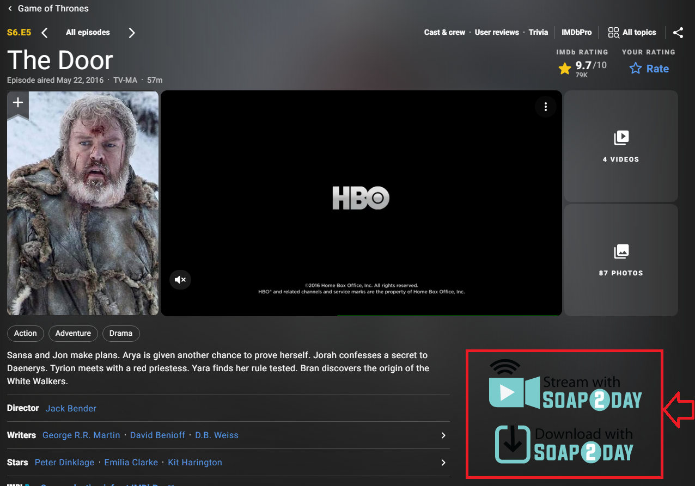

This extension adds a "stream" button and a "download" button to movie and TV show pages on IMDb, the world's largest movie database.
Instructions:
Note: If the stream button or download button doesn't show up, that means the video isn't currently available for streaming or downloading from the third party servers that Soap2day connects to. Please remember that not every movie ever made is available to stream or download even though the info may be on IMDb.
